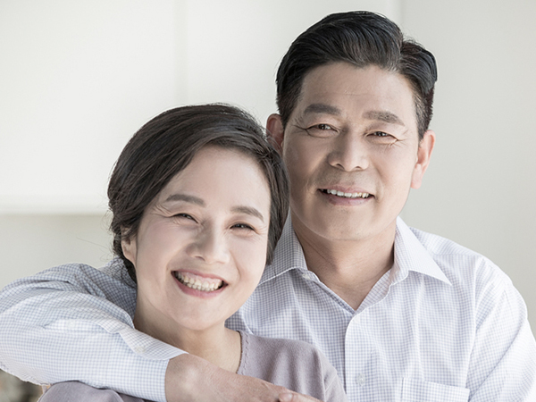

치아를 더 오래 건강하게 쓰기 위한 중장년층 맞춤 교정입니다.
<%=m_client_en%>
결코 늦지 않은 지금
시간이 지나면서 치열은 조금씩 변하게 됩니다.
40~50대 이후의 중장년 성인은 잇몸이 나빠지기 시작하는 시기로,
치아 사이가 벌어지거나 치아가 상실된 경우가 많습니다.
젊어서는 바르게 배열된 치아도 나이가 들면서 삐뚤삐뚤해지기도 합니다.
중장년 교정은 이런 분들을 위한 교정치료입니다.
치아교정은 보통 어릴 때 해야 한다는 인식이 있지만,
중장년이 된 이후에도 교정치료를 받으시는 것이 가능합니다.
치아의 배열이 바르지 못하다면 나이와 관계없이 교정치료를 받으시는 것이
자신의 치아를 건강하게 오래 사용할 방법이라고 하겠습니다.

성인의 치아교정은 치아와 관련된 기능을 개선하는 것이 가장 중요한 목표입니다.
환자가 자신의 치아 상태를 잘 이해하고 있고,
치료에 대한 협조가 수월하기 때문에
오히려 더 나은 결과를 빠르게 얻을 수 있는 것이 성인교정입니다.
<%=m_client_name%>는 겉에서 보기에 되도록 티가 나지 않는 장치를 이용해 사회생활 하시는 데 불편함도 최소화해드립니다.
저작기능이 개선되어
먹는 즐거움이
살아남
노안에서 벗어나
더욱 건강한 이미지
연출이 가능해짐
틀어진 부분만을
교정하는 식으로
치료기간 단축이
가능
심미성이 우수한 장치를
선택하여 치료 기간 중
부담이 적음
치아가 벌어 지고
삐뚤어져 지지력이
부족한 분
아랫니가 나면서
점점 치아가 틀어지고
있는 분
어릴 때
치아교정을 받지
못했던 분
식사가
어려울 정도로
부정교합인 분
더 나은 외모적
이미지 개선을
원하는 분